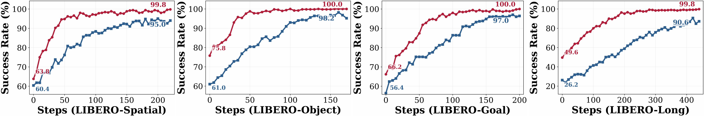
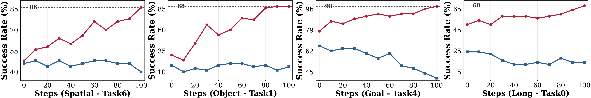

Success Rate (%) across four task suites. Bold marks the best per column; our method ranks #1 on every suite.
| Model | Paradigm | Spatial | Object | Goal | Long | Average |
|---|---|---|---|---|---|---|
| OpenVLA | SFT | 84.7 | 88.4 | 79.2 | 53.7 | 76.5 |
| GR00T-N1 | SFT | 94.4 | 97.6 | 93.0 | 90.6 | 93.9 |
| π0 | SFT | 96.8 | 98.8 | 95.8 | 85.2 | 94.2 |
| π0.5 | SFT | 98.8 | 98.2 | 98.0 | 92.4 | 96.9 |
| OpenVLA-OFT | SFT | 97.6 | 98.4 | 97.9 | 94.5 | 97.1 |
| GRAPE† | RL | 88.5 | 92.1 | 83.1 | 57.2 | 80.2 |
| TGRPO† | RL | 90.4 | 92.2 | 81.0 | 59.2 | 80.7 |
| VLA-RL† | RL | 90.2 | 91.8 | 82.2 | 59.8 | 81.0 |
| SimpleVLA-RL | RL | 98.2 | 98.7 | 98.8 | 91.7 | 96.9 |
| RLinf-GRPO | RL | 98.9 | 99.7 | 98.3 | 93.6 | 97.6 |
| πRL‡ | RL | 99.6 | 100.0 | 99.6 | 94.0 | 98.3 |
| LaST-R1 (Ours) | RL | 99.8 | 100.0 | 100.0 | 99.8 | 99.9 |
†full-trajectory warm-up · ‡two-camera-view training · others use single-trajectory, single-view data, matching our setting.

LaST-R1 trained with LAPO achieves faster convergence and higher success rates than Action-Only+PPO across the four LIBERO suites. The paper attributes this sample efficiency to latent CoT optimization: environmental rewards shape both reasoning embeddings and action sequences, smoothing online RL instead of updating only physical actions.
At convergence, LaST-R1+LAPO ranks first across Spatial, Object, Goal, and Long in the LIBERO comparison table, reaching a 99.9% average success rate. The paper highlights the Long suite as the clearest gap, reporting 99.8% for LaST-R1 and 94.0% for πRL, consistent with stronger long-horizon manipulation.
LaST-R1 achieves zero-shot generalization to unseen objects, backgrounds, and lighting conditions after RL post-training. The paper reports that LaST-R1 confines real-world performance drops to within 15% for novel objects and remains robust under background and lighting variation.
These trends follow the paper's result analysis: latent CoT optimization smooths the RL optimization landscape and enables sample-efficient online learning. Appendix analyses further examine adaptive reasoning lengths and optimized execution episode lengths.

We deploy LaST-R1 on Franka Research 3 hardware across four manipulation tasks — one single-arm and three dual-arm: Insert hexagon block, Open bag zipper, Wipe vase with sponge, and Open bottle cap. LaST-R1 uses a few-shot SFT warm-up with 30 expert trajectories followed by LoRA-based online RL, and is compared with the SOTA VLA model π0.5 trained by full-size SFT on 100 expert trajectories. All policies are evaluated over 20 rollouts at varied positions under original and OOD settings.
Numbers in parentheses show the drop from each method's Original result under OOD perturbations. LaST-R1 improves average Original success from 52.5% after warm-up to 93.75% after RL, surpassing π0.5 at 71.25%.
| Methods | Insert hexagon block | Open bag zipper | ||||||
|---|---|---|---|---|---|---|---|---|
| Original | Unseen-Object | -Background | -Lighting | Original | Unseen-Object | -Background | -Lighting | |
| π0.5 (Full-size SFT) | 65 | 35 (-30%) | 55 (-10%) | 40 (-25%) | 75 | 30 (-45%) | 70 (-5%) | 60 (-15%) |
| LaST-R1 (Few-shot SFT→RL) | 45→90 | 75 (-15%) | 85 (-5%) | 80 (-10%) | 55→95 | 80 (-15%) | 95 (-0%) | 90 (-5%) |
| Methods | Wipe vase with sponge | Open bottle cap | ||||||
|---|---|---|---|---|---|---|---|---|
| Original | Unseen-Object | -Background | -Lighting | Original | Unseen-Object | -Background | -Lighting | |
| π0.5 (Full-size SFT) | 75 | 45 (-30%) | 65 (-10%) | 50 (-25%) | 70 | 50 (-20%) | 55 (-15%) | 55 (-15%) |
| LaST-R1 (Few-shot SFT→RL) | 65→95 | 80 (-15%) | 90 (-5%) | 95 (-0%) | 45→95 | 95 (-0%) | 80 (-15%) | 85 (-10%) |
Each cell averages 20 independent rollouts at varied tabletop positions. The standard deviation over three independent runs is 1.25% for LaST-R1 after RL and 4.5% for π0.5.
Robotic foundation models require reasoning over complex visual scenes to execute adaptive actions in dynamic environments. While recent studies on latent-reasoning Vision-Language-Action (VLA) models have demonstrated the capability to capture fine-grained physical dynamics, they remain predominantly confined to static imitation learning, severely limiting their adaptability and generalization.
In this paper, we present LaST-R1, a novel reinforcement learning (RL) post-training framework designed to effectively harness "latent reasoning-before-acting" policies. Specifically, we propose Latent-to-Action Policy Optimization (LAPO), a core RL algorithm that jointly optimizes the latent reasoning process and action generation. By explicitly embedding latent Chain-of-Thought (CoT) reasoning directly within the RL optimization loop, LAPO stimulates profound physical world modeling, which in turn drives robust execution in interactive environments. Furthermore, an adaptive latent CoT mechanism is introduced, allowing the policy to dynamically modulate its reasoning horizon based on diverse environment states.
Experiments show that LaST-R1 achieves a near-perfect 99.9% average success rate on the LIBERO benchmark with only one-shot supervised warm-up, significantly improving convergence speed and performance over prior state-of-the-art (SOTA) methods. In real-world deployments, LaST-R1 yields up to a 22.5% average improvement over a SOTA supervised fine-tuning approach across four complex tasks, including both single-arm and dual-arm settings. Finally, LaST-R1 demonstrates strong generalization across simulated and real-world environments.
@article{chen2026last,
title={LaST-R1: Reinforcing Action via Adaptive Physical Latent Reasoning for VLA Models},
author={Chen, Hao and Liu, Jiaming and Yan, Zhonghao and Han, Nuowei and Zhang, Renrui and Gu, Chenyang and Gao, Jialin and Guo, Ziyu and Qian, Siyuan and Wang, Yinxi and others},
journal={arXiv preprint arXiv:2604.28192},
year={2026}
}